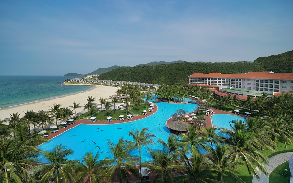

Vi tri:
Để đến Nha Trang, bạn có thể chọn di chuyển bằng phương tiện máy bay hoặc xe khách. Sau đó, bạn sẽ di chuyển đến quần thể nghỉ dưỡng, vui chơi Vinpearl Nha Trang trên đảo Hòn Tre bằng tàu cao tốc hoặc hệ thống cáp treo vượt biển của Vinpearl. Khi đến đảo Hòn Tre, bạn sẽ di chuyển bằng hệ thống xe điện của Vinpearl Nha Trang để đến khu nghỉ dưỡng và các địa điểm vui chơi.Lich su hinh thanh:
Vinpearl Land Nha Trang hay Khu du lịch Hòn Ngọc Việt (tên cũ cho đến tháng 12 năm 2006[1]) là một khu du lịch nghỉ dưỡng sang trọng nằm ở đảo Hòn Tre, phường Vĩnh Nguyên, thành phố Nha Trang, tỉnh Khánh Hòa.


Tại đảo Hòn Tre, bạn sẽ di chuyển bằng hệ thống xe điện của Vinpearl Nha Trang
Vinpearl Resort Nha Trang